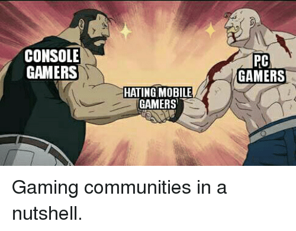

Objections to my Claim
Quality of gameplay
While it is true that Console and PC can not only run games better but also provide a much more enriching user experience with regards to video games as compared to mobile games , that is not the argument I am trying to make here . My argument is not about the quality of the games produced but solely focused on the platform that is better for a game developer to produce on.
Microtransactions
While this statement is true , I will make a point relating to the business model that revolves around a game on mobile versus the business model behind Console and PC games.
Typically on Console and PC , the business model is to buy either a complete game upfront , or buying the game upfront and then choosing to pay for specific DLC content later on as it releases. Some of the newer games that are free to play , such as fortnite or apex legends , mainly gain profit from microtransactions as well. Rarely do ANY of the games on these platforms depend on revenue from advertisements.
While in the case of mobile games , most games are free to play. If they do cost money it usually ranges from $1-$2. The games on mobile get their revenue either from advertisements or through microtransactions. While some may argue that the concept of microtransactions is wrong , it is this very concept that allows developers to release free to play games.
Complexity of Games
Mobile Games typically have much less depth/complexity to them This is not only due to the nature of the games typically published on mobile but also the nature of the platform. Mobile games do not support the creation of very complex and high graphic games that we see on console and PC. However , this only makes my claim stronger , rather than being a counterpoint to my argument. Lower complexity games means less time spent on development , which further translates to lower development costs.
Plagiarism in games
Plagiarism is much more common in mobile games. While plagiarism does hurt the developers sales at the end of the day , there is nothing we can do about it. Video game ideas cannot be copyrighted or owned . This acts as both a gift and a curse to the industry. It acts as a gift because it allows the industry to experiment and evolve ideas that eventually benefit the players in the end. Without this there would probably only be 1 game of each category. It also acts as a curse because it sinks into the developers profits because if the players are given a choice between 15 games of the same genre , they might not pick the game that was the original trend setter of the genre.
Addictive aspect of games
Mobile games have a bad reputation for being addictive . This is true because of the way mobile games are typically structured. What I mean by structured is that they are designed to make the player return every day by offering some sort of in-game incentive and constantly updating the game with new objectives so that the player never runs out of things to do . However , this is a matter of ethics in game development . In fact , this has no negative effect on the sales of the developers at all. (Salehan, M., & Negahban, A. (2013))
Conclusion
With the data analysis , it is safe to say that the following are facts about the development of games on mobile :
- Mobile Gaming has an exponentially larger audience than PC and Console
- Developing for mobile requires less resources and time
- Mobile games can create new experiences by using smartphone features
- It is easier to publish on mobile than it is on console and PC.
- Mobile games appeal to a wider age demographic
- Mobile game development is more profitable for indie developers and studios